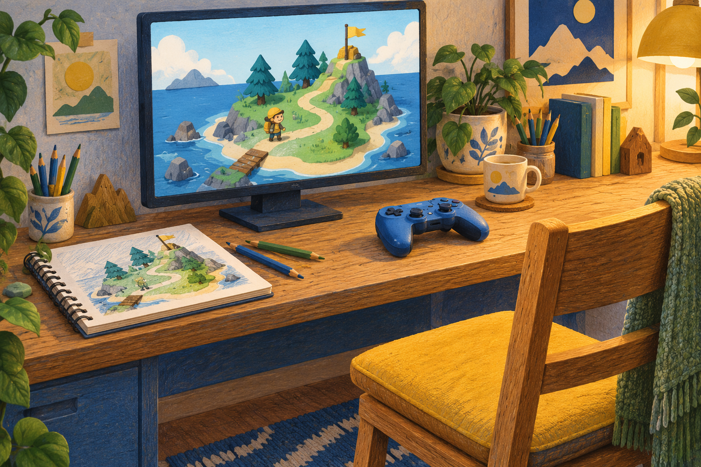
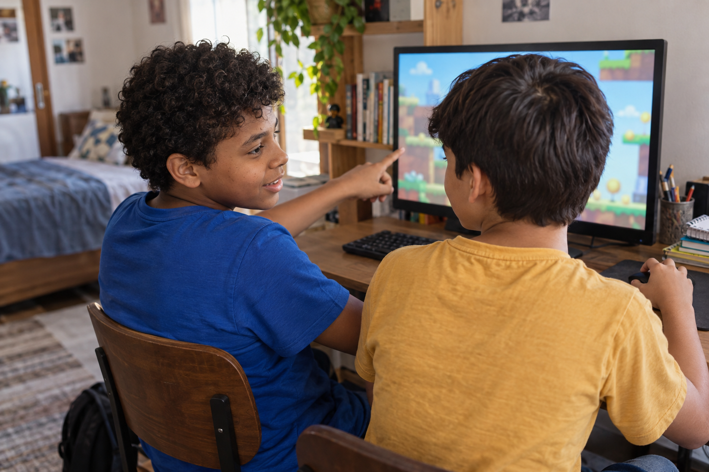
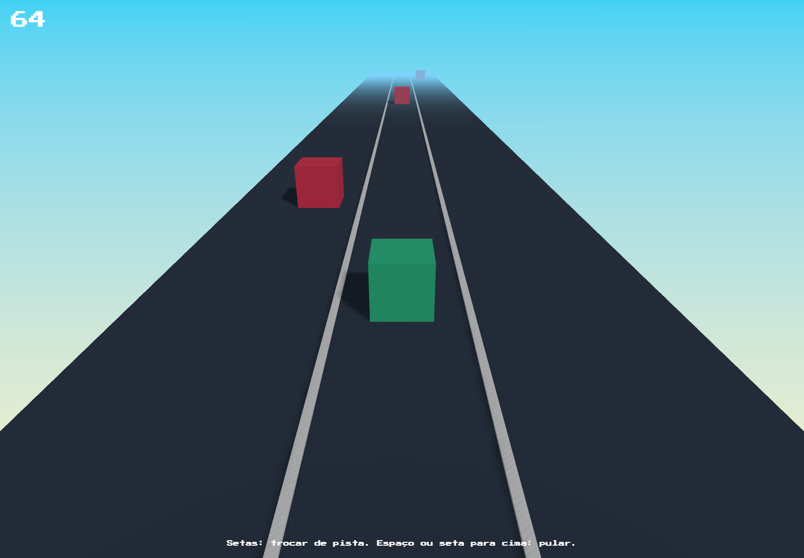

Diário de criador
Rafael criou um jogo e convidou um amigo para jogar.
A ideia dele virou uma experiência que podia compartilhar.
Conversa
Abrir jogo
Rafael criou um jogo e convidou um amigo para jogar.
A ideia dele virou uma experiência que podia compartilhar.
‘No fim eu peguei o link e mandei pro meu amigo jogar.’

Rafael · aluno
Mostrar uma criação pode abrir uma conversa sobre algo que a criança gosta.

Ela conta o que inventou e vê outra pessoa experimentar.
Depois, pode ouvir o que o amigo achou.

Qual parte ele entendeu? Onde ficou difícil? O que foi mais divertido?
Neste exemplo da nossa plataforma, o jogador desvia de caixas que ficam mais rápidas.

64 segundosCorrida Infinita 3DQuem criou pode observar a partida e decidir se quer ajustar a dificuldade.
Na Comunidade, um projeto publicado pode ser compartilhado por link e aparecer no Mural dos Criadores.
Ali, os alunos podem conhecer criações e comentar, com moderação.
Criar jogos também pode ser uma forma de compartilhar ideias e conversar sobre elas.
Siga o perfil para conhecer mais experiências.